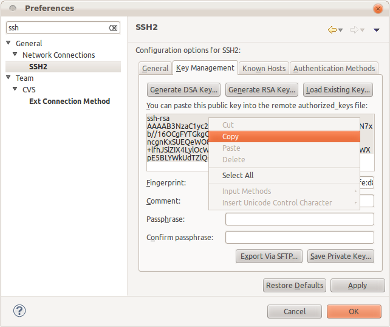
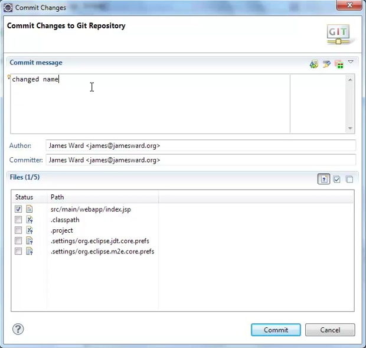
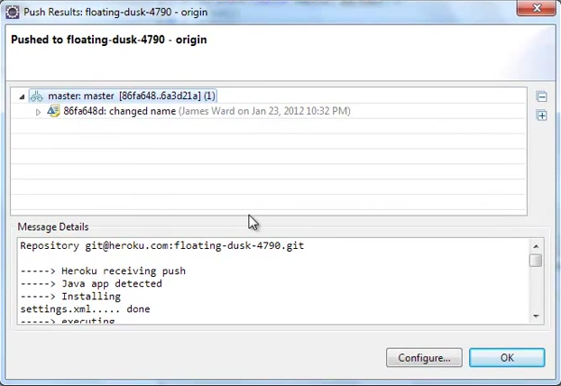

You have successfully created a Java application on Heroku. Every Heroku app is backed by a private Git repository to track the changes to your application code. Below is information about your app, that you will require for subsequent steps:
- App URL: http://{{app-name}}.herokuapp.com
- Git Repository:
git@heroku.com:{{app-name}}.git
1. Heroku SSH key setup
In order to deploy your changes to the Git repo you will need to commit your changes to this Git repository. Git requires a SSH key to commit or get latest changes from your Git repository.
If you don’t have an SSH key already then in Eclipse go to:
- Window menu → Preferences
- Search for SSH
- Select the SSH2 preferences
- Select the Key Management tab
- Select Generate RSA Key... to create a new SSH key
- Select Save Private Key...
- Select and copy the public key (starts with ssh-rsa)
If you have an SSH key then in the Kay Management tab select Load Existing Key... and copy the public key.

Paste the SSH key generated above into the text area below and click on Upload SSH Key. This will associate your public key with your Heroku account.
2. Import the app into Eclipse
Now you are ready to import the created project into Eclipse. Select the File menu → Import, select Project from Git, select Clone..., paste git@heroku.com:{{app-name}}.git into the URI box and select Next.

Eclipse will fetch the branches of the remote git repository and should display just a master branch. Select Next and then Finish. A local copy of the project will now be on your computer. Now select Next, select Import as general project, select Next, and then select Finish to complete the import. From here you can take a few other steps to setup the project for local development.
3. Make a change
Make a change to the app that you will be able to see when the new version is pushed to Heroku. For instance, add something to the index.jsp file. If you have setup your Eclipse for local development then you should be able to test this change locally before pushing it to Heroku.
4. Deploy the change to Heroku
To commit the changes to the local git repository, right-click on the project, select Team → Commit..., enter a commit message, and select Commit.

Now that the changes are in the local git repository they can be pushed to Heroku. Right-click on the project, select Team → Push to Upstream. This will send your change to Heroku and then Heroku will run the project's Maven build and redeploy the changes. When the process has completed you will see the details of the push and the Maven build.

Next steps
Heroku allows you to have a high level of control over your application and manage it it a really easy way. You can look at your application logs, scale your Heroku processes, add Add-ons to your application and much, much more.
In order to manage and/or monitor your applicaiton, your will need to use the Heroku command line utility. You can download the Heroku Toolbelt which includes the Heroku command line, Ruby and Git command line. To learn more about Heroku's command line interface click here.
You can now repeate these steps aboive and continually deploy your application to Heroku. As you dive in further check out the Heroku Dev Center for a lot more details on using Java on Heroku.